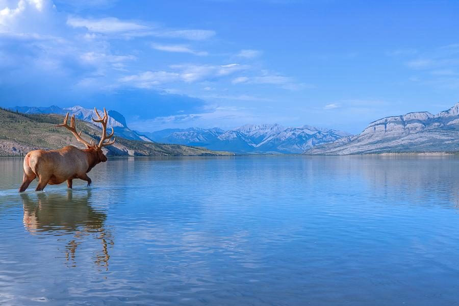
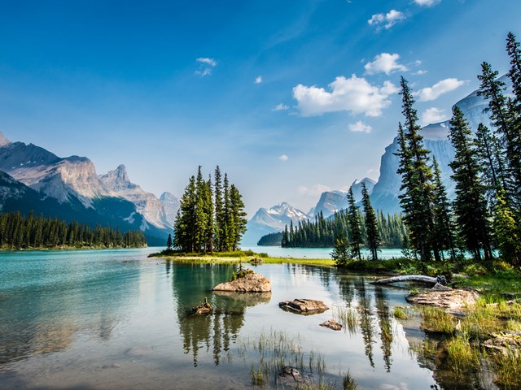
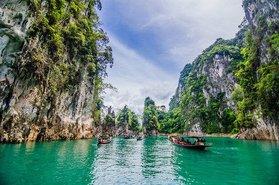
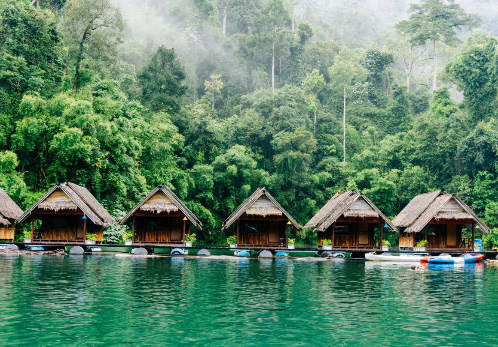
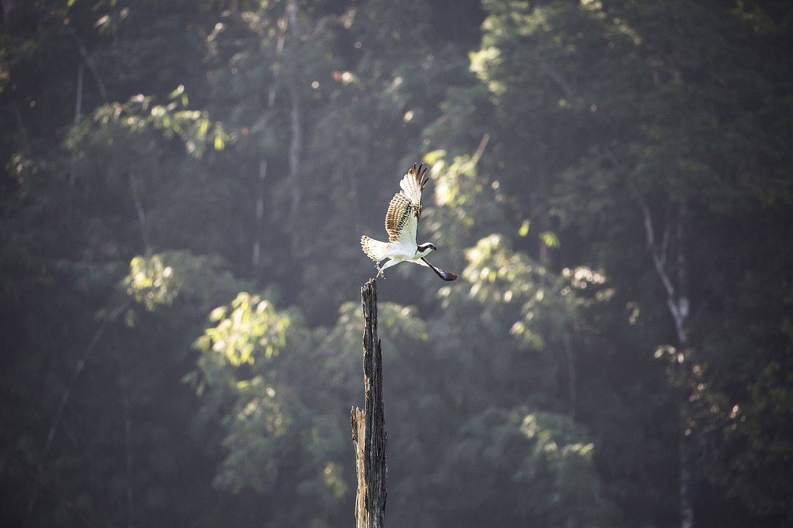

Jasper National Park
In the heart of the Alberta Rocky Mountains is Jasper National Park, an incredible and large park that offers everything from mountain hiking to stunning glaciers. Jasper National Park is the ultimate place to get active, and there is no shortage of outdoor activities available to visitors. Hiking, wildlife spotting, rock climbing, fishing, camping and horseback riding are just a few of the many options.
{kind=link}
The major attractions
Don’t miss major attractions in the park that include the magnificent Athabasca Falls, the breathtaking views from aboard the Jasper SkyTram and the beautiful, still waters of Medicine Lake.
From time to time we all need a little inspiration.
"The mountains are calling and I must go." - John Muir
{kind=link}
World Heritage Site
The park was declared a UNESCO World Heritage Site in 1984, together with the other national and provincial parks that form the Canadian Rocky Mountain Parks, for the mountain landscapes containing mountain peaks, glaciers, lakes, waterfalls, canyons, and limestone caves as well as fossils found here

Written by Lonely Traveler.
Share this post on social media:


Khao Sok National Park
Khao Sok National Park is huge, it covers an area of 739 square kilometres (285 square miles). There’s an obvious reason Khao Sok’s nature is incredibly green year-round: its one of the wettest regions of Thailand. So be prepared to get wet! Most rain falls between late April to December, but there’s really no way to predict the rainfall on a specific day (or even hour).
{kind=link}
The major attractions
A visit to Khao Sok National Park isn’t complete without visiting the famous lake called Cheow Lan Lake. The Cheow Lan Lake, also called the Ratchaprapha Dam Reservoir, is an artificial lake and exists for just 30 years. It was created to generate power, control floods, irrigate land and fish for food! The lake is a big part of Khao Sok National Park but its entrance is located an hour-drive (50km) from Khao Sok town. You’ll most likely stay in Khao Sok town if you aren’t sleeping on the lake.
{kind=link}
From time to time we all need a little inspiration.
"You won, this time. But you are as big as you are ever going to get. And I’m still growing." - Sir Edmund Hillary
Cost staying overnight
Let’s be honest: staying on the lake overnight is very expensive. Prices of the raft houses vary from $75-$200/night for a simple bungalow (no electricity, just a mattress), to $200-$400/night for a more luxurious bungalow. These are complete tour packages and include a lake safari, a jungle trekking or cave exploration, canoe rental and food.
{kind=link}
Written by Lonely Traveler.
Share this post on social media:
Rodna National Park
Rodnei Mountains National Park is the second-largest national park in Romania, protecting some of the wildest landscapes of the Carpathians, a must for nature enthusiasts and hikers passionate for less beaten trails and solitary routes.

The major attractions
This protected area has its share of spectacular caves, including Grota Zanelor, a 4,269 meters long cave with the largest ramification in the country and Jgheabul lui Zalion, considered to be the most difficult to cross cave in Romania given its difference of level of -266 meters. The cave can be reached following the trail Valea Telcisorului-Valea Seaca or Valea Rebrei-Valea Rea-Obcina Rebrisorului.

From time to time we all need a little inspiration.
"To travel, to experience and learn: that is to live." - Tenzing Norgay
Glacial lakes
This large national park also conserves the most impressive traces of the Quaternary glaciation from the Eastern Carpathians, noticeable through the presence of large glacial lakes. Be sure to include in your route Lala Mare — the biggest glacial lake in Rodnei Mountains — located at an altitude of 1,815 meters, close to Ineu Peak, and its nearby smaller lake — Lala Mica —, or the four Buhaescu lakes, all with their distinct features and beauty.

Written by Lonely Traveler.
Share this post on social media: